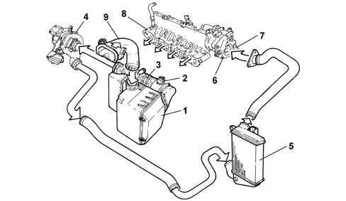
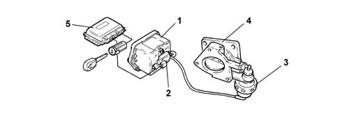

INTRODUCTION - ENGINE AIR SUPPLY CIRCUIT
- Path
- Descriptions > 10 ENGINE UNIT > 1048 ENGINE AIR SUPPLY CIRCUIT > INTRODUCTION - ENGINE AIR SUPPLY CIRCUIT
- Kind
- system description
- Applies to
- engines: 2.0 JTS, 3.2 V6, 1.9 JTD 16V; all production periods
- Interactive page
- https://sloeber94.github.io/elrnDB-aGt/en/#/125000278
Applies to: engines: 2.0 JTS; all production periods
CONSTRUCTION SPECIFICATIONS
The air intake circuit consists of the various components that ensure the correct direction and filtering of the air flow rate required for the volumetric filling of the cylinders in all engine operating conditions.
Applies to: engines: 1.9 JTD 16V; all production periods
COMPOSITION
STRUCTURE
AIR SUPPLY SYSTEM

1 - Air filter complete with resonator
2 - Flow meter
3 - Corrugated hose
4 - Turbocharger
5 - Air/air heat exchanger (intercooler)
6 - Throttle body
7 - Throttle casing control actuator
8 - Intake chamber
9 - Hose with resonator
DESCRIPTION OF COMPONENTS
THROTTLE BODY
Construction specifications
In order to limit the shuddering of the engine whilst it is switching off, a throttle casing has been introduced downstream of the air chamber which has the task of closing the flow of air to the cylinders.
The throttle remains open in all other operating conditions.

1 - Vacuum reservoir
2 - Solenoid
3 - Throttle casing control actuator
4 - Throttle body
5 - Injection control unit
Operation
When the engine is off, the throttle is open because no vacuum is present.
When the engine is running, the throttle is open because the deactivated solenoid valve closes off the flow of the vacuum to the throttle casing pneumatic actuator.
A vacuum builds up during engine operation.
When the engine is turned off (the key is turned OFF), the injection control unit keeps the actuator supply relay supplied 4 or 5 seconds longer and simultaneously earths the solenoid valve. The valve then opens to send a vacuum to the pneumatic actuator which closes the throttle to cut off the air flow to the cylinders.